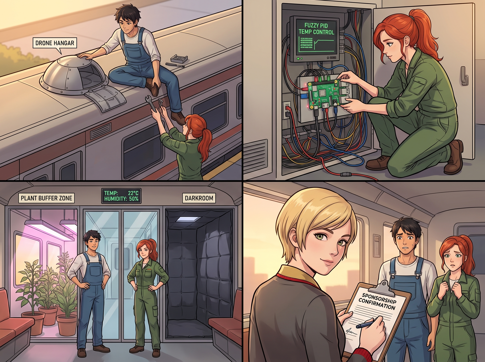
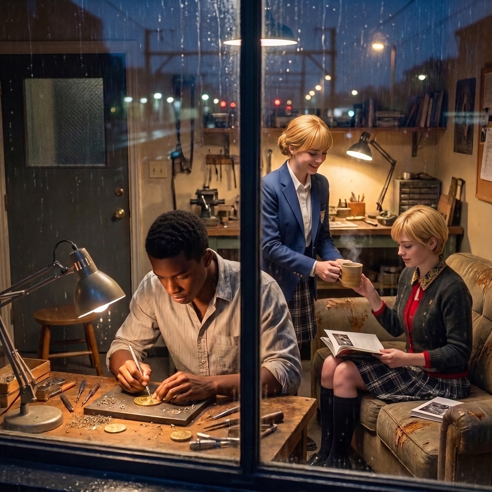

風雨方舟


趁著開學前的最後一個空檔，Warren 和 Brooke 特地留了半天時間，為二號車廂裝上了一套自研的智能溫控與天窗系統——頂部加裝了無人機自動巡檢機庫，配電箱裡接入了樹莓派工控板與模糊 PID 溫控算法，讓天窗能根據濕度自動開合，同時兼顧植物緩衝帶與暗房恆溫恆濕的需求。Victoria 驗收時挑不出毛病，難得爽快地簽下了贊助確認函。
沒想到，這套系統很快就迎來了第一場真正的實戰考驗。
一、暴雨突襲
週二午後三點，天空以肉眼可見的速度轉為濃重的鉛灰色。
太平洋吹來的冷鋒越過海岸山脈，初秋的第一場暴雨毫無預警地砸向波特蘭東區。幾分鐘內，豆大的雨點化作了連綿狂暴的暴雨幕，沉重地砸在舊鐵道兩側的碎石枕木上。
一號車廂客廳裡，Max 正趴在長木桌上整理剛洗出的底片，狂風突然把窗櫺吹得劇烈晃動，她猛地抬頭：「糟糕！二號車廂剛才開了頂部天窗通風！底片和新移栽的腎蕨——」
話音未落，身旁的 Chloe 已經抓起一把扳手跳了起來，正準備頂著暴雨衝出去手動關窗。然而，還沒等她們推開門，二號車廂已經無聲地啟動了它的防禦機制。
二、智能天窗的精準閉合
二號車廂鋼樑頂端的高靈敏度壓電雨滴傳感器，在接收到第一滴雨水撞擊的瞬間，微型工控板上的指示燈迅速切換為警備黃色。
步進電機靜音運轉，四扇重型高側天窗在微秒級指令下平穩向內收回，雙層耐候密封橡膠條嚴絲合縫地咬合，將傾盆暴雨徹底阻隔在窗外；車頂外側的弧形導水槽將雨水順暢引導至地底暗管，原本震耳欲聾的雨打鐵皮聲，化作了一種沉穩舒緩如白噪音般的低沉節奏。
當 Max 和 Chloe 冒著細雨衝進二號車廂時，整座空間乾爽得如同一座溫暖的避風港，連工作台上的一張薄雪梨紙都未曾被雨水沾濕分毫。
三、雙區溫濕度自適應
入口花架處，由於室外濕度飆升，底部的微循環靜音風扇自動低速運轉，帶動空氣穿過六盆茂盛的波士頓腎蕨與直立迷迭香，既防止了盆土漚根，又將草本香氣均勻擴散至全場；暗房隔壁的濕度傳感器同時亮起，小型除濕模組平穩運作，將 Max 存放底片的區域死死鎖定在最理想的濕度與溫度。
Kate 繫著圍裙走進來，伸手摸了摸腎蕨葉片上乾爽的水霧，眼底滿是驚喜：「完全沒有受潮呢……空氣聞起來比平時還要清新！」
天花板頂部的停機坪艙門輕巧滑開，微型無人機自動起飛，沿著預設軌道巡航一圈，確認沒有任何滲水點後平穩降落，在 iPad 終端彈出推送：【環境掃描完畢：全場無漏水、設備零過熱、植物狀態優良】。
Victoria 踩著室內軟拖鞋走進車廂，看著屏幕上乾淨的數據流，一直緊繃著的眉頭終於徹底舒展開來：「算那兩個極客沒有白拿基金會的資助。」
「哈！大股東，承認吧，妳剛才在辦公室肯定也捏了一把冷汗！」Chloe 把大號扳手隨手插回工具牆的專屬卡槽，跨坐在高腳凳上，轉頭對著 Max 眨了眨眼。
四、雨幕下的車廂溫存
暴雨在車廂外瘋狂沖刷著大地；車廂內，暖黃色的低壓工作燈柔柔地灑在整齊的冷軋鋼工具牆與木質地板上。點唱機在角落自動播放起一首輕柔的藍調，伴隨著窗外有節奏的雨聲，形成了一種奇妙而治癒的共鳴。
Miles 坐在工作台邊，藉著穩定的光線專注地雕刻著他的黃銅紀念幣；Kate 為每個人遞上一杯熱騰騰的肉桂蘋果茶；Victoria 在沙發角翻看著下週的展覽畫冊。而 Max 坐在暗房門口的小板凳上，舉起相機，將窗玻璃上映出的三人身影，連同雨幕外朦朧的鐵道燈光，一同定格了下來。
任憑外界風雨呼嘯，這座融合了鋼鐵、綠植、代碼與愛的二號車廂，已然成為波特蘭最堅固、最溫暖的永恆方舟。